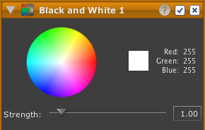

Bianco e nero
Lo strumento Bianco e nero consente di convertire una foto a colori in una in bianco e nero.
È anche possibile controllare la conversione come se le lenti fossero state equipaggiate con un filtro colorato al momento dello scatto della foto.
Nota: ciascun filtro colorato filtra il suo colore complementare ossia il suo opposto nella ruota cromatica.
Ad esempio, un filtro giallo filtra le luci blu poiché il blu è l'opposto del giallo nella scala cromatica. Pertanto, è quasi sempre possibile aumentare il contrasto del cielo usando un filtro giallo che ne filtra il blu e lo rende più scuro rispetto alle nuvole.
Per convertire una foto a colori in una in bianco e nero:

- Fare clic sul pulsante dello strumento bianco e nero nella barra degli strumenti. Sarà visualizzato un nuovo strumento bianco e nero in cima alla pila strumenti.
- Per applicare un filtro colorato fare clic sulla ruota cromatica. Ad esempio, se nella ruota cromatica si fa clic sul giallo, sarà applicato un filtro giallo.
- Per aumentare o diminuire l'intensità del filtro e il suo effetto, spostare il dispositivo di scorrimento Intensità.
- In alternativa: